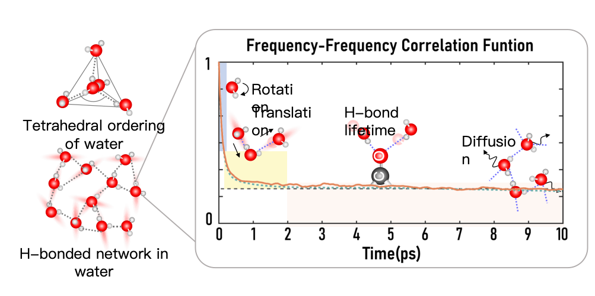

Research Focus
At the Spatiotemporal Spectroscopic Imaging Lab, our research focuses on understanding the ultrafast dynamics, molecular interactions, and structural properties of complex liquids. These systems often exhibit mesoscopic structures—dynamic arrangements extending beyond the immediate molecular scale—and undergo phase transitions that impact their functions.
Examples of our study subjects include: Biological water and interfacial water, Liquid-liquid phase separation (LLPS)-driven processes, Lipid membranes, Drug-delivery systems, Reactive deep eutectic solvents (DES). These systems represent a fascinating intersection of chemistry, biology, and materials science, where understanding their molecular-scale properties is key to unlocking their potential.
The Interplay of Dynamics, Interactions, and Structure
In all these systems, the properties and functions arise from the delicate interplay between molecular dynamics (how molecules move), intermolecular interactions (how they attract or repel each other), and structural organization (how molecules arrange themselves over time).
A central feature of our research is the study of hydrogen bonding. The dynamics of hydrogen bonds—how they form, break, and reform—are fundamental to processes like solvation, biochemical reactions, and energy transport. The interplay between fast molecular motions (temporal dynamics) and the spatial heterogeneity of molecular environments is particularly critical for understanding how these systems operate.
For example, biological water behaves differently from bulk water due to interactions with proteins, membranes, and interfaces, influencing processes like protein folding and cellular energy flow. Similarly, LLPS-driven biomolecular condensates rely on dynamic intermolecular interactions to form and function, offering insights into cellular compartmentalization and disease mechanisms.
Spectroscopic Approach
To achieve these research goals, the You group pioneers in advanced time-resolved and sub-diffraction-limit spectroscopic techniques, such as 2D Infrared Spectroscopy (2DIR), Tip-Enhanced Raman Spectroscopy (TERS), Scanning Near-Field Optical Microscopy (s-SNOM). These methods allow us to probe solution and interface dynamics with high spatial and temporal resolution. Our experiments are complemented by molecular dynamics (MD) simulations and density functional theory (DFT) calculations, which help us interpret experimental data and develop a molecular-level understanding. This intrdisciplinary approach enhances our ability to unravel the complexities of hydrogen bonding in biological systems.
Ongoing Research Projects
· Macromolecular Liquid-Liquid Phase Separation (LLPS)
· Functional Materials Interfaces
· Hydrogen Bond Dynamics
· Chirality and CISS Effect
-

Exploring the Ultrafast Dynamics of Water in both in both bulk solution, biological interfaces and liquid-liquid phase separation systems
Learn more 了解更多 -

Leveraging TERS based chemical mapping for the investigation of the self-reduction process of graphene oxide, with improved spatially resolution and spectral sensitivity
Learn more 了解更多 -

Solvation Structure and molecular interactions at Lipid–Water Interfaces Studied Through Vibrational Spectroscopy
Learn more 了解更多 -

The distinctive feature of liquid water in its extended H-bond network. Explore the multiscale dynamics of water linked to different water motions.
Learn more 了解更多